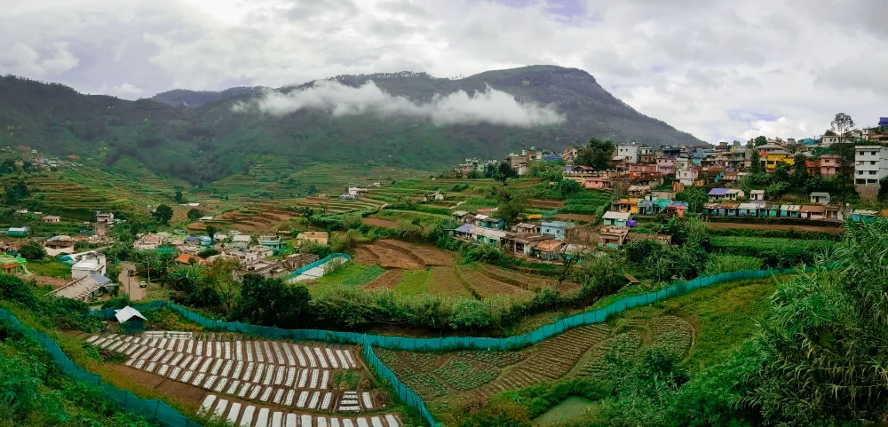

01
Willus Villa
Up to 15guests
3 bedrooms · 3 bathrooms · Living space · Kitchen
4 double cot beds and 1 single cot bed, plus an extra mattress
- Private BBQ
- Campfire with DJ light
- Jeep trekking


Vattavada · Kerala
A vegetable and strawberry farm stay in the highlands of Kerala, made for families, friends and groups.
Escape to the cool and peaceful landscapes of Vattavada. Nature Castle Resort is a rustic mountain retreat set on a forested hilltop, offering beautiful views of the surrounding highlands and Pambadum Shola Mountain. The property features wooden villa-style accommodation designed to complement its natural surroundings.
The resort is centred on vegetable farming, with its own strawberry farm as the highlight, and is made for families, friends and groups who want to stay on a working farm in the hills.
Book Nature Castle Get DirectionsWhat makes Nature Castle special
4Villas9Rooms
3 bedrooms · 3 bathrooms · Living space · Kitchen
4 double cot beds and 1 single cot bed, plus an extra mattress
2 interconnected bedrooms · 2 bathrooms · Outdoor kitchen for self-cooking
4 double cot beds in total, plus an extra floor mattress
2 interconnecting bedrooms (80 & 120 sq) · 1 shared bathroom
2 double cot beds, plus an extra mattress

The farm
Nature Castle mainly focuses on vegetable farming, and its strawberry farm is the highlight of a stay. It is a farm stay for families, friends and groups who want to spend their holiday among the crops in the cool highland air.
Away from the rush of city life, the property is ideal for a quiet holiday, a family getaway or a refreshing mountain escape. It is also a convenient base for exploring Vattavada and the Western Ghats, including Pampadum Shola National Park.



Spend your mornings enjoying the cool mountain atmosphere and your evenings surrounded by the quiet beauty of the hills.
Find Nature Castle in the highlands, then choose a nearby place for an unhurried day out.
Vattavada, Kerala

Cool air, farms and far hills.
Resort directions ↗A local field guide. Select a marker to explore. Place positions are approximate and connections show direction, not roads; distances are approximate road distances. Map data © OpenStreetMap contributors.
01 / 07
Cascades in the hills close to the resort.
Nature Castle is a peaceful base for a mountain holiday, family getaway or a slower escape in Kerala's highlands.
Enquire Now